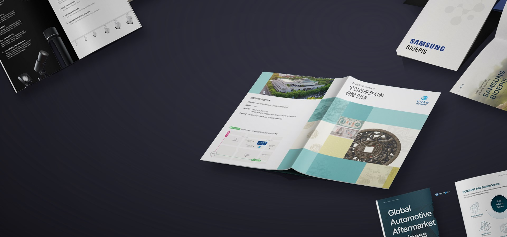
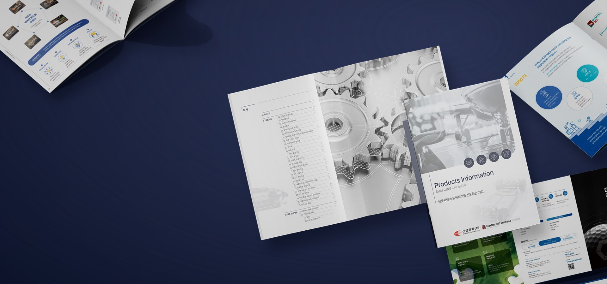
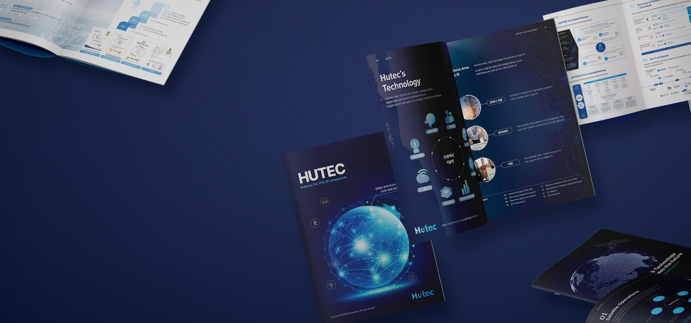
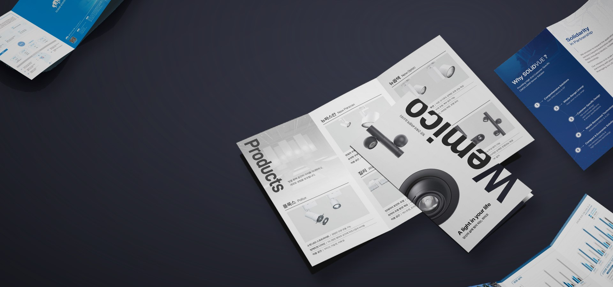
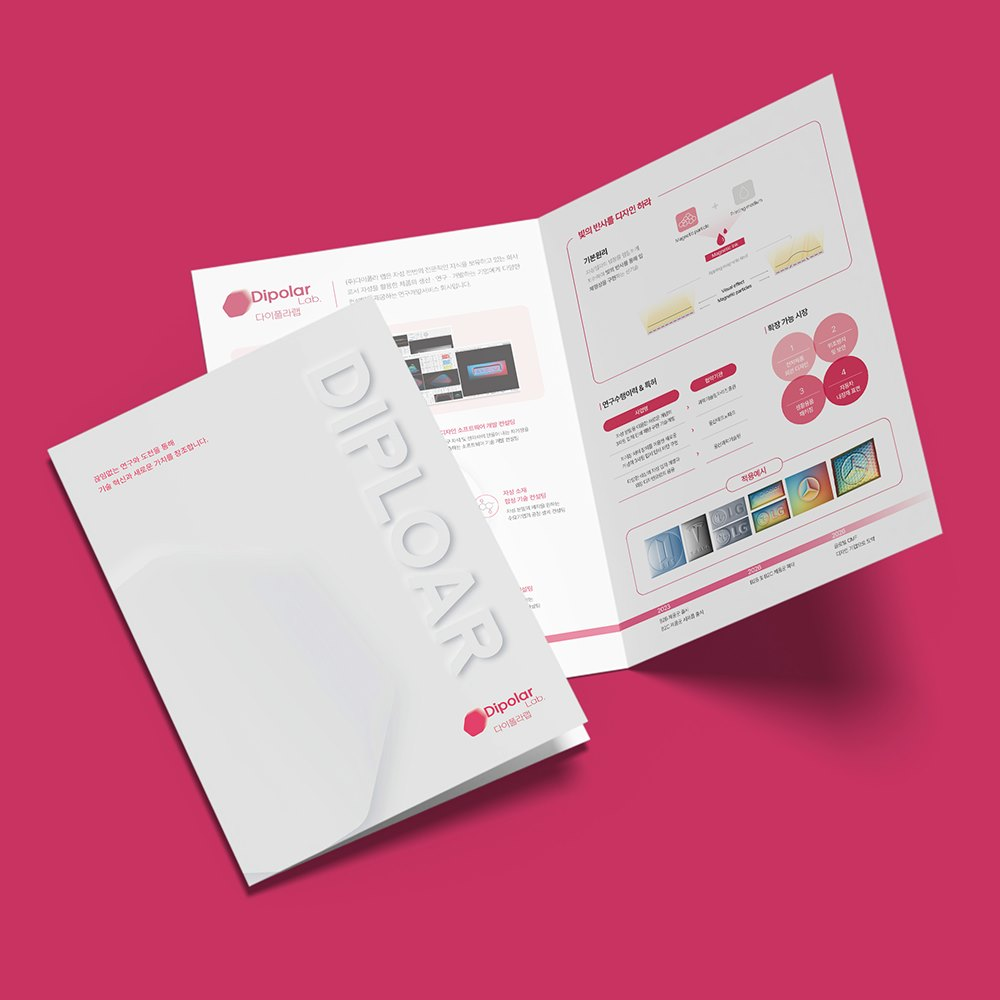
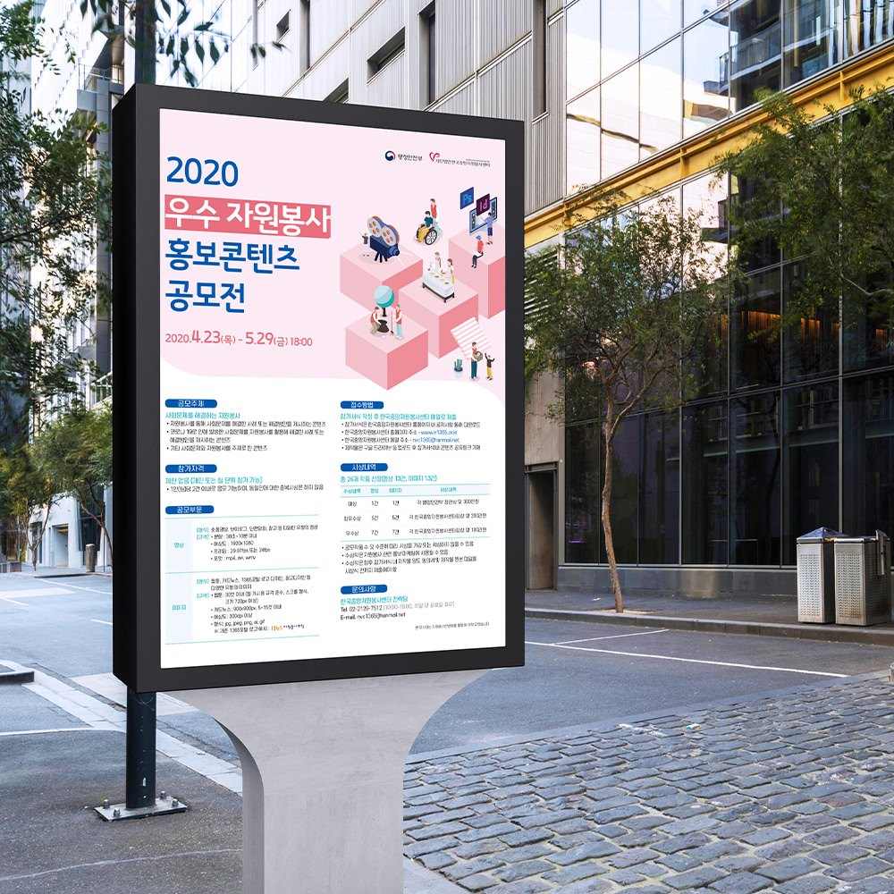
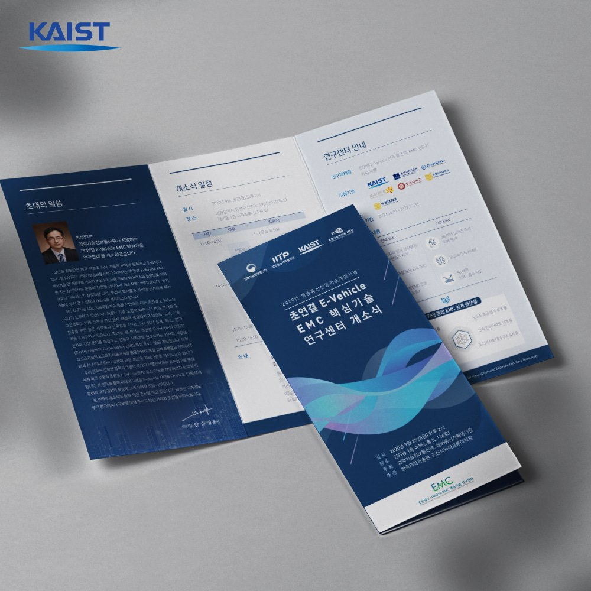

Designed to be Read.
읽는 사람 기준의 편집 디자인
연구성과집·카탈로그·제안서. 표와 각주가 많은 원고일수록
읽는 사람의 순서로 다시 설계합니다.

From Draft to Print.
초안부터 인쇄 · 납품까지 한 팀
앞부분 초안을 먼저 확인받고 전체를 진행합니다.
자체 인쇄소에서 색 교정·감리·납품까지 같은 팀이 끝냅니다.

Same Day, Daejeon.
대전 · 세종 · 충청권 당일 방문 미팅
대덕연구단지·정부대전청사, 필요한 날 바로 찾아가
원고와 용지 샘플을 함께 보며 상담합니다.

Korean and English.
국문 · 영문판을 같은 일정에
번역 부서가 직접 번역하고 영문 레이아웃을 다시 잡아
해외 학회·전시회 일정에 두 언어를 동시에 납품합니다.
제작 서비스
대전 카탈로그 · 브로슈어 · 리플렛
제작부터 인쇄까지, 한 팀이 끝냅니다
퍼스트디자인 대전지사는 정부출연연구기관 · 대학 · 기술기업 · 공공기관의 인쇄물을 전담합니다. 무엇을 만들어야 할지 정해지지 않았어도 괜찮습니다. 목적과 독자만 말씀해 주시면 맞는 제작물부터 골라 드립니다.
제작 문의서 작성하기 → 01카탈로그 · 카다로그사양표와 도면이 많은 제품을 비교하기 쉬운 순서로→
01카탈로그 · 카다로그사양표와 도면이 많은 제품을 비교하기 쉬운 순서로→ 02브로슈어 · 회사소개서기관과 기업의 이야기를 읽는 순서로. 연구성과집 포함→
02브로슈어 · 회사소개서기관과 기업의 이야기를 읽는 순서로. 연구성과집 포함→
03리플렛 · 리플릿접지 설계부터 행사 당일 납품까지→ 04팜플렛 · 소식지 · 백서8~32페이지 안내 책자, 정기 발행 템플릿→
04팜플렛 · 소식지 · 백서8~32페이지 안내 책자, 정기 발행 템플릿→
05포스터학회 · 캠페인 · 행사 포스터, A0 출력부터 옵셋까지→ 06PPT · 제안서입찰 · 과제 · IR 제안서를 평가표 순서로→
06PPT · 제안서입찰 · 과제 · IR 제안서를 평가표 순서로→ 07브랜딩 · 로고CI · BI, 명함 · 사이니지까지 한 규격으로→
07브랜딩 · 로고CI · BI, 명함 · 사이니지까지 한 규격으로→ 08홈페이지 · 웹검색에서 찾히고 문의로 이어지는 사이트→
08홈페이지 · 웹검색에서 찾히고 문의로 이어지는 사이트→ 09촬영 · 스튜디오제품 컷부터 연구시설 · 공장 현장 컷까지→
09촬영 · 스튜디오제품 컷부터 연구시설 · 공장 현장 컷까지→ 10마케팅 · 광고블로그 · 인스타그램 · 검색광고 · 언론홍보→
10마케팅 · 광고블로그 · 인스타그램 · 검색광고 · 언론홍보→
숫자로 보는 대전지사
- 편집 디자인 경력
- 12년+
- 납품한 프로젝트
- 3,200+
- 재의뢰 · 소개 비율
- 98%
- 정부지원사업 · 바우처 수행
- 400+
최근 접수 현황
- 1일 전유성구 정부출연연구기관 — 연구성과집 · 기관 브로슈어
- 2일 전대덕테크노밸리 바이오 기업 — 영문 제품 카탈로그
- 4일 전둔산동 병원 — 진료 안내 리플렛 · 포스터
- 5일 전세종 소재 공공기관 — 정책 소식지 · 백서
- 6일 전대덕산단 제조기업 — 제품 카탈로그 리뉴얼 · 촬영
제작 문의서 접수 기준 · 기관명은 표기하지 않습니다.
함께한 기관 · 기업

대전 업종별 제작 가이드
업종이 다르면
먼저 만들어야 할 자료도 다릅니다
정부출연연 · 대학 · 연구소기업
연구성과집, 기관 브로슈어, 개소식·세미나 리플렛, 학회 포스터. 도표와 각주가 많은 원고를 읽는 순서로 다시 짭니다.
바이오 · 제약 · 의료기기
영문 제품 카탈로그, 임상·기전 브로슈어, 학회 부스 리플렛. 번역과 조판을 한 팀에서 처리합니다.
항공우주 · 국방 · ICT
기술 브로슈어, 입찰·과제 제안서, 시스템 구성도. 보안이 필요한 자료는 비밀유지계약 후 진행합니다.
정부청사 · 공공기관 · 지자체
정책 소식지, 백서, 캠페인 포스터, 행사 팜플렛. 발간 규정과 심의 일정에 맞춰 제작합니다.
제조 · 산업단지 기업
제품 카탈로그 리뉴얼, 전시회 리플렛, 안전 표시물. 현장 촬영부터 인쇄까지 한 번에 진행합니다.
제작 사례
연구기관부터 스타트업까지,
기술을 읽히게 만든 작업들

대표 사례
KAIST 연구센터 개소식 리플렛
초연결 E-Vehicle 핵심기술 연구센터 개소식에 맞춰 연구 목표, 수행기관, 행사 일정을 한 장에 정리했습니다. 참여 기관 로고 규정을 확인하고, 접힌 상태에서도 행사 일정이 보이도록 면 순서를 설계했습니다.
- 제작물
- 3단 접지 리플렛
- 판형
- A4 (펼침 297×210mm)
- 범위
- 기획 · 디자인 · 인쇄
- 납품
- 행사 전일 직접 전달


진행 순서
초안을 먼저 확인받고
전체를 진행합니다
앞부분 몇 페이지를 먼저 디자인해 방향을 확인받기 때문에 완성 단계에서 처음부터 다시 만드는 일이 없습니다.
| 단계 | 대전지사가 하는 일 | 확인해 주실 것 | 소요 |
|---|---|---|---|
| 01 자료 접수 | 원고 · 도표 · 사진을 받아 목적과 독자를 정리하고, 판형 · 수량 · 일정을 확인합니다. | 제작 목적, 배포처, 납품 희망일 | 당일 |
| 02 구조 설계 · 견적 | 목차와 페이지 플랜을 잡고 분량 · 판형 · 제본을 확정한 뒤 견적을 드립니다. | 목차 확인, 견적 승인 | 1~2일 |
| 03 초안 확인 | 표지와 앞부분 4~8페이지를 먼저 디자인해 방향을 보여드립니다. | 방향 · 톤 확정 | 3~5일 |
| 04 전체 디자인 · 수정 | 전체 페이지를 제작하고 오탈자 · 수치 · 단위를 검수합니다. 수정 횟수 제한이 없습니다. | 내용 검수, 최종 승인 | 1~3주 |
| 05 인쇄 · 납품 | 색 교정본을 확인한 뒤 자체 인쇄소에서 인쇄 · 제본하고 원본 파일과 함께 납품합니다. | 색 교정본 확인 | 3~7일 |
제작물별 기본 사양
대전에서 가장 많이 만드는
인쇄물의 기본 제안 사양
상담 시 목적과 수량에 맞춰 조정합니다. 용지 · 후가공 실물 샘플을 보고 정하실 수 있습니다.
| 제작물 | 권장 판형 | 페이지 · 구성 | 용지 · 후가공 | 표준 기간 |
|---|---|---|---|---|
| 제품 · 기술 카탈로그 | A4 · 국배판 | 16~32p, 무선 제본 | 표지 아트지 250g 무광 코팅 · 내지 150g | 디자인 2주 + 인쇄 1주 |
| 연구성과집 · 기관 브로슈어 | A4 · 4×6배판 | 48~80p, 무선 · 양장 | 표지 몽블랑 240g · 내지 랑데뷰 130g | 원고 정리 1주 + 디자인 3주 + 인쇄 1주 |
| 회사소개서 | A4 · 정사각 210mm | 16~24p, 중철 · 무선 | 표지 스노우 250g 유광 부분 코팅 | 디자인 2주 + 인쇄 1주 |
| 3단 리플렛 | A4 3단 접지 | 6면 (앞 3면 · 뒤 3면) | 아트지 200g 무광 코팅 · 오시 후 접지 | 디자인 3~5일 + 디지털 인쇄 2~3일 |
| 팜플렛 · 소식지 | A4 · B5 | 8~24p, 중철 제본 | 내지 아트지 120~150g | 디자인 1~2주 + 인쇄 1주 |
| 학회 · 캠페인 포스터 | A0 · A1 (학회) / A2 · B2 (배포) | 1면 | 대형 출력 유광 · 배포용 옵셋 인쇄 | 디자인 3~5일 + 출력 1~3일 |
정부출연연구기관이나 대학 과제의 연구성과집도 디자인·인쇄가 되나요?
네. 연구성과집·연차보고서·백서처럼 도표와 각주가 많은 자료가 대전지사의 주력 분야입니다. 원고를 받으면 목차와 페이지 플랜을 먼저 잡고, 표·그래프·도식을 다시 그려 읽는 순서대로 정리합니다. 자체 인쇄소에서 무선·양장 제본까지 진행하며, 발간등록번호와 ISBN 표기 위치도 함께 챙겨 드립니다.
영문 병기나 영문판 카탈로그도 한 번에 진행되나요?
네. 퍼스트디자인은 번역 부서를 직접 운영하고 있어 번역과 조판을 같은 팀에서 처리합니다. 국문판을 기준으로 영문판 레이아웃을 다시 잡기 때문에 글자 길이 차이로 지면이 깨지는 일이 없고, 해외 학회·전시회 일정에 맞춰 두 언어를 동시에 납품할 수 있습니다.
100부 이하 소량 인쇄도 가능한가요?
가능합니다. 세미나·심사용 자료처럼 수량이 적은 인쇄물은 디지털 인쇄로, 500부 이상은 옵셋 인쇄로 진행해 수량별로 가장 유리한 방식을 안내드립니다. 디지털 인쇄는 판비가 없어 30부, 50부 단위의 소량도 부담 없이 제작할 수 있습니다.
대덕연구단지나 정부대전청사 쪽으로 방문 미팅이 가능한가요?
네. 대전 전 지역과 세종·청주·공주 등 충청권은 필요한 날 바로 방문해 원고와 용지 샘플을 함께 보며 상담드립니다. 외부인 출입이 제한되는 기관은 화상 회의와 인쇄 견본 우편 발송으로 대신하고 있습니다.
대외비 기술 자료도 맡길 수 있나요?
네. 요청하시면 비밀유지계약을 먼저 체결하고, 프로젝트 자료는 전담팀만 접근하도록 관리합니다. 납품 후 원본 파일은 요청에 따라 반환하거나 폐기하며, 포트폴리오 공개는 사전에 동의를 받은 경우에만 합니다.
대전 인쇄 · 디자인 서비스 색인
대전에서 찾는 인쇄물, 디자인부터 인쇄까지 한 번에
제작 칼럼
대전 연구기관 · 기업 담당자를 위한
제작 실무 기준

FIRST DESIGN DAEJEON
제작물 종류와 수량만 알려주시면
당일 견적과 일정을 안내드립니다
기획 · 디자인 · 번역 · 촬영 · 인쇄를 한 팀이 진행합니다.
원고가 정리되기 전이라도 목차와 일정부터 함께 잡아 드립니다.
- 전화 상담1600-9487평일 09:00 ~ 18:00
- 이메일work@firstmkt.co.kr파일 첨부 문의
- 방문 미팅대전 · 세종 · 청주 · 공주필요한 날 바로 찾아갑니다